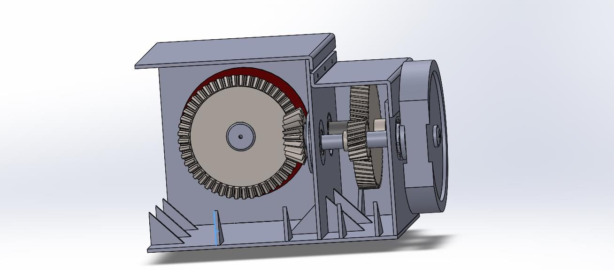
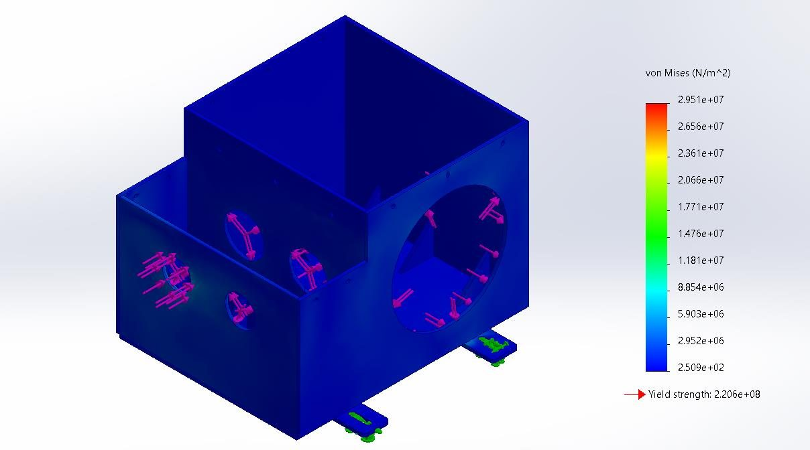
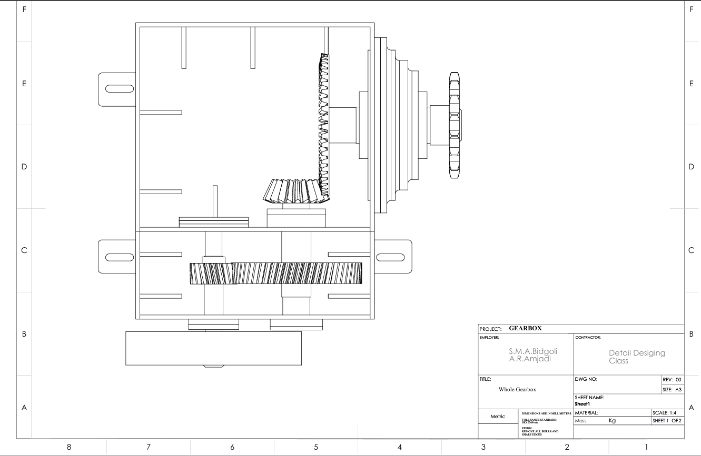

Machine Design
Gearbox: Shafts and Bearings
A three-shaft gearbox (belt input, helical and straight bevel stages, chain output) for an 11 kW motor: shaft fatigue design, keys, SKF bearings with adjusted life, and a welded housing checked by FEA.

Overview
Size the shafts, keys and bearings of a gearbox that transmits 11 kW under loads fluctuating between 20 % and 100 % for 10 years in two shifts with VG68 oil at 40 °C, and design a housing that stays within its stress and deformation limits.
Approach
- Gear forces from the helical (ψ = 13°) and bevel stages as input to the combined bending–torsion fatigue design of each shaft (CK45, Marin factors, K_f and K_fs at the shoulders).
- Keys sized against shear and crushing with FS = 2.5.
- Bearings checked against the basic rating life and then the SKF adjusted life with viscosity ratio, contamination and load factors.
- Housing fabricated from 10 mm welded plates with machined bosses, a middle wall and ribs; radial shaft seals for the dusty environment.
Results
| Bearing B1 (7208), SKF adjusted life | L₁₀ₘ = 4048 Mrev (15.4 years) |
|---|---|
| Bearings B5/B6 (33215/Q), SKF adjusted life | 314 and 181.39 Mrev vs 168 Mrev required |
| Housing, SolidWorks FEA | 29.5 MPa vs 220 MPa yield; 0.047 mm vs 0.1 mm |
| Shaft S1 | Ø35–45 mm, 210.08 N·m |
| Shaft S2 | Ø50–65 mm, 619.74 N·m |
| Shaft S3 | Ø70–80 mm, 1518.36 N·m |
| Bearings S1 / S2 / S3 | 7208, 7207 / 33110/Q, 33212/Q / 2 × 33215/Q |
From the report





